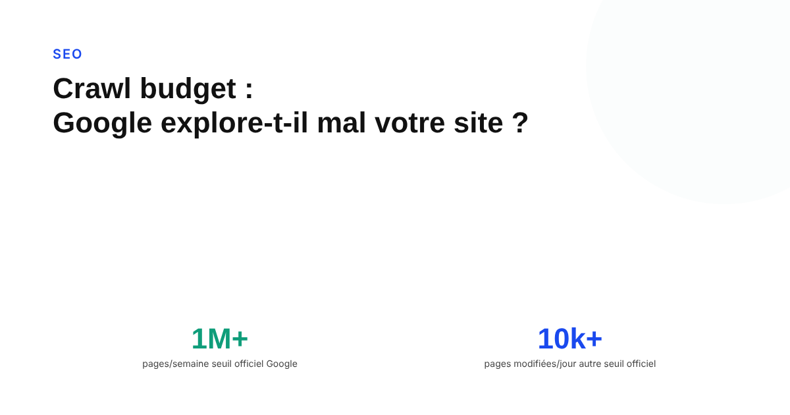
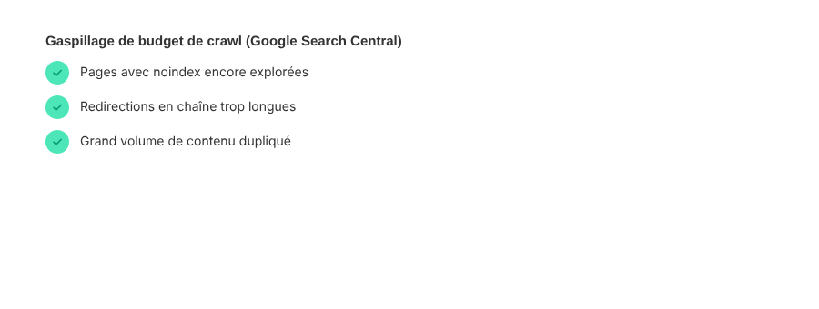

Crawl budget : comment savoir si Google explore mal votre site, et pourquoi ça compte
Le crawl budget est un sujet souvent mal calibré : beaucoup de petits sites s'en inquiètent sans raison, tandis que de vrais problèmes passent inaperçus sur des sites qui devraient s'en préoccuper. Ce que Google en dit officiellement, et comment savoir si ça vous concerne vraiment.

Peu de sujets techniques SEO génèrent autant d'inquiétude disproportionnée que le crawl budget. Des sites de quelques centaines de pages s'en soucient parfois plus que de leur contenu, alors que Google est explicite sur le public concerné : son guide sur la gestion du crawl budget s'adresse « principalement » aux sites de plus d'un million de pages uniques qui changent environ chaque semaine, ou de plus de 10 000 pages qui changent quotidiennement. Google précise lui-même que ces seuils restent des estimations approximatives, pas des règles strictes.
Ce que Google appelle vraiment « crawl budget »
Google le définit comme « l'ensemble des URL que Google peut et veut explorer ». Deux facteurs distincts s'y combinent : la capacité de crawl (ce que Google peut techniquement explorer sans surcharger le serveur) et la demande de crawl (ce que Google a envie d'explorer, selon la popularité et la fraîcheur perçues du contenu). Chaque nom d'hôte est traité comme un site à part, avec son propre budget — un sous-domaine n'hérite pas automatiquement du budget du domaine principal.
Les signaux qui justifient de s'y intéresser
Au-delà des seuils de taille, Google cite un troisième signal, indépendant de la taille du site : un grand nombre d'URL classées « Découverte — actuellement non indexée » dans le rapport d'indexation des pages de Search Console. Ce statut signifie que Google connaît l'existence de ces pages mais n'a pas jugé prioritaire de les explorer. Pour la grande majorité des sites plus petits, Google recommande simplement de maintenir un sitemap à jour et de surveiller ce rapport, sans aller plus loin dans l'optimisation du crawl.

Ce qui améliore ou dégrade la capacité de crawl
La capacité de crawl dépend directement de la santé technique du site : des temps de réponse stables ou en amélioration l'augmentent, tandis que des réponses lentes, des erreurs serveur (5xx) ou des signaux de limitation de débit (429) la réduisent. Cette capacité est aussi partagée entre tous les robots de Google : une forte demande d'un robot peut réduire ce qui reste disponible pour les autres.
Ce qui gaspille vraiment le budget, selon Google
La documentation liste des erreurs précises à corriger en priorité : utiliser noindex pour retirer des pages — Google les redemande quand même avant de les abandonner, ce qui consomme du crawl pour rien. Utiliser le robots.txt en espérant libérer du budget pour d'autres pages — Google indique que cette réallocation ne se produit généralement pas, sauf si le site atteint déjà sa limite de capacité. Laisser des pages supprimées renvoyer autre chose qu'un code 404 ou 410, ce qui les maintient plus longtemps dans la file de crawl. Laisser des soft 404 en place, qui continuent d'être explorés inutilement. Tolérer du contenu dupliqué — y compris le défilement infini ou des versions triées différemment de la même liste de produits. Les chaînes de redirection longues, et les sitemaps qui ne sont pas tenus à jour avec un champ lastmod correct.
Le réflexe simple avant tout diagnostic avancé
Avant tout outil tiers ou analyse de logs serveur, la première étape reste de recouper le rapport d'indexation des pages de Search Console avec la taille réelle du site : un volume important d'URL « Découverte — non indexée » sur un site de taille moyenne est un signal à prendre au sérieux, même sous les seuils que Google cite pour les très gros sites. Pour un site de quelques centaines ou milliers de pages, en revanche, un sitemap propre et un maillage interne cohérent suffisent généralement — le crawl budget n'est tout simplement pas le facteur limitant.
FAQ
Le crawl budget concerne-t-il tous les sites ?
Non. Google précise que son guide sur le crawl budget s'adresse surtout aux sites de plus d'un million de pages uniques qui changent environ chaque semaine, ou de plus de 10 000 pages qui changent quotidiennement. Pour un site plus petit, Google recommande simplement de garder un sitemap à jour et de surveiller le rapport d'indexation des pages.
Bloquer des pages via robots.txt libère-t-il du crawl budget pour le reste du site ?
Généralement non, selon Google. L'entreprise indique que ses robots ne réallouent pas automatiquement ce budget à d'autres pages, sauf si le site est déjà en train d'atteindre sa limite de capacité de crawl.
Le statut « Découverte - actuellement non indexée » dans Search Console signifie-t-il un problème de crawl budget ?
C'est l'un des signaux que Google cite explicitement comme pouvant justifier de s'intéresser au crawl budget, surtout si ce statut concerne un grand nombre d'URL. Il indique que Google connaît l'existence de ces pages mais n'a pas jugé prioritaire de les crawler jusqu'ici.
Envie de savoir si votre site a vraiment un problème de crawl, ou juste un maillage à revoir ?
Pour aller plus loin, voir la page SEO, et l'article Pourquoi Google n'indexe jamais certaines de vos pages.
Pour continuer sur ce sujet.